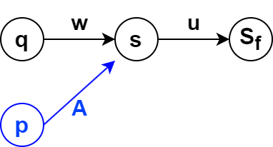
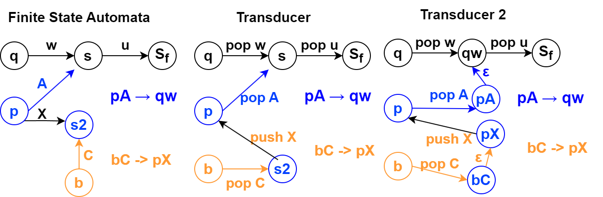
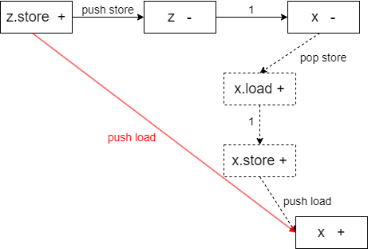

钻研了两年半《Polymorphic Type Inference for Machine Code》论文。看完本文后还有任何相关的问题可以问我。
跨函数的类型传播算法，可以将库函数的类型传递到代码内部。即使没有库函数识别时，也可以识别处函数内的结构体信息。
资源
retypd 是一个非常高级的反编译类型恢复算法，技术领先程度足以超出其他论文好几年。有一篇论文: 《Polymorphic Type Inference for Machine Code》
资源：
开发与使用
如何使用当前开源的代码呢？代码是一个python模块。当前开源的两个相关的使用代码有：retypd-ghidra-plugin和gtirb-ddisasm-retypd。
首先分析retypd-ghidra-plugin是如何使用retypd的。内部代码主要分为ghidra插件的java代码，和封装模块，ghidra_retypd_provider。Java代码部分通过Ghidra提供的API，从Ghidra的反编译器的IR中提取出相关的类型约束，提取为json文件。然后调用python封装模块读取并求解，结果也表示为json文件。然后Ghidra插件部分的java代码读取结果，并设置相应的类型。（注，无论是上次分析lua虚拟机，还是这次分析/bin/ls，花的时间特别久，半小时往上）
输入ghidra_retypd_provider的样例json约束文件如下。可以观察到，每个函数的约束单独分开，同时还包含一个call graph部分。
1 | { |
输出ghidra_retypd_provider的样例json结果文件如下。可以观察到，包含两种类型的结果，分别是结构体和函数。结构体包含内部的成员及类型。函数块描述了函数的各个参数的类型。在这里的自定义encoder中定义了转json的函数。
这一点其实很奇怪，似乎该插件关注的核心是函数参数类型。这里后续解析和类型设置也说明了这一点。
1 | [ |
接着我们看ghidra_retypd_provider内部是如何调用retypd的。
使用
SchemaParser.parse_constraint解析每个约束项（SubtypeConstraint），它保存子类型关系左右两边的变量（DerivedTypeVariable）。每个函数的约束项放到一个集合里，再按函数名字放到map里，然后构建Program：1
2
3
4
5
6program = Program(
CLattice(),
{},
parsed_constraints,
callgraph,
)这里
parsed_constraints就是准备好的那个map。callgraph都不用动，就是Dict[str, List[str]]。前两个参数分别是types: Lattice[DerivedTypeVariable]和global_vars: Iterable[MaybeVar]。使用Solver去求解约束：
1
2
3config = SolverConfig(top_down_propagation=True)
solver = Solver(program, config, verbose=LogLevel.DEBUG)
_, sketches = solver()查看solver的
__call__方法，可以发现返回类型是Dict[DerivedTypeVariable, ConstraintSet]和Dict[DerivedTypeVariable, Sketch]。传入
CTypeGenerator，得到最终的类型结果。1
2
3
4
5
6
7
8gen = CTypeGenerator(
sketches,
CLattice(),
CLatticeCTypes(),
int_size,
pointer_size,
)
return list(gen().values())CTypeGenerator的__call__方法的返回类型是Dict[DerivedTypeVariable, CType]。
根据这里，每个规则大致就是var1 ⊑ var2或者var1 <= var2，然后两边的变量就是DerivedTypeVariable类型的。因此，上面结果里返回的map其实就能够用来查每个变量的类型。
S-Pointer and S-Field⊕/⊖ 通过搜索代码，可以得知，至少在retypd-ghidra-plugin和gtirb-ddisasm-retypd中是没有和这个相关的规则的生成的。
retypd ghidra 插件
在我的fork仓库里可以直接下载到构建好的插件，修改版Ghidra，以及docker镜像。同时提供了给retypd的样例输入和输出。（其实docker容器可以通过挂载x11 socks的方式运行图形界面程序）
通过修改 GhidraRetypd.zip中的extension.properties，可以绕过ghidra插件安装时的版本检查
1 | version=10.2.3 |
安装Ghidra插件：
- 打开 Ghidra 软件，点击 "File" 菜单，选择 "Install Extensions" 选项。
- 在弹出的 "Install Extensions" 窗口中，点击 "Browse" 按钮选择你要安装的扩展程序。
- 选中你要安装的扩展程序文件（通常是一个 zip 压缩文件），然后点击 "Open" 按钮。
- 点击 "OK" 按钮开始安装扩展程序。在安装过程中，Ghidra 软件会自动解压缩扩展程序文件，并将它们安装到正确的目录中。
- 安装完成后，重启 Ghidra。
算法详解
- 首先阅读这个PPT和这个论文《Saturation algorithms for model-checking pushdown systems》，学会B¨uchi发现， Caucal提出的这个saturation算法。
- 然后阅读论文，学习其中基于saturation算法改进的部分。
自动机基础 Saturation algorithms
资料：
- 《Pushdown systems》了解下推自动机
- 《Saturation algorithms for model-checking pushdown systems》了解Saturation algorithms相关的背景概念。
有两个重要结论：
- 下推系统可达的栈内容形成了一个正则语言，因此可以表示为有限状态自动机。但是最初提出的算法是指数级的。后面有人提出了多项式级的算法，核心思想就是引入一个saturation process，转换被逐渐地加入有限自动机。（这个结论没有被retypd使用）
- 下推系统定义了配置（状态加栈字符串）之间的转换关系，可以多项式时间内构建一个带输出的有限状态自动机（transducer）识别这些转换关系。（retypd使用的结论）
有限自动机
- \(\Sigma\) 是自动机的字符集。\(\Sigma^{*}\) 是字符串的集合。 \(\Gamma^{\leq n}\) 是长度最多为n的字符串集合。
- 一个在字符集 \(\Sigma\) 上的自动机 \(\mathcal{A}\) 是一个元组： \((\mathbb{S},\mathcal{I},\mathcal{F},\delta)\) 分别代表有限的状态集合，初始状态集合，最终状态集合，转换规则集合 \(\delta \subseteq \mathbb{S} \times \Sigma \times \mathbb{S}\) 表示从一个状态遇到一个字符，转换到另外一个状态。
- 有时会把字符集写进来 \((\mathbb{S},\Sigma,\mathcal{I},\mathcal{F},\delta)\) 变成五元组
- \(s \overset{a}{\underset{\mathcal{A}}{\longrightarrow}} t\) 表示自动机 \(\mathcal{A}\) 有这样一个转换 \((s,a,t)\)
- \(s \overset{w}{\underset{\mathcal{A}}{\Longrightarrow}} t\) 表示自动机读入字符串w之后可以转换到t。
下推系统 pushdown system 与 P-自动机
和下推自动机的区别：pushdown system是自动机的简化版本。当我们用PDS建模程序的时候，有时不太关注读入和识别字符，而是关注栈状态的转移。
和自动机的区别在于没有识别字符串这种概念。自动机一般只能用来识别字符串，有初始态，终止态，遇到某个字符的时候触发转换规则。这里的下推系统则不是识别字符串的，即转换规则里不需要读入字符，直接改变状态和栈内容。这里下推系统直接主要关注栈上的内容字符串。
一个下推系统是四元组 \((Q,\Gamma,\bot,\Delta)\)
- \(Q\) 是有限的控制状态的集合
- \(\Gamma\) 是有限的栈字符集
- \(\bot \in \Gamma\) 是一个特殊的底部栈字符
- \(\Delta \subseteq (Q \times \Gamma) \times (Q \times \Gamma^{\leq 2})\) 是转换的集合。表示在一个状态从栈上弹出一个字符，转换到另外一个状态并压入一个字符串。
- Configuration表示系统状态，是 当前状态 \(\in Q\) 和 当前栈字符串 \(\in \Gamma^{*}\) 的二元组。
- 不考虑弹出超过栈底的情况。所以有时会引入特殊底部栈字符，然后要求规则不会把这个符号弹出来。
Pushdown system （PDS）可以用来分析程序
- 程序表示
- 状态Q保存程序的全局变量
- 栈反映程序执行的调用栈
- 栈上字符编码程序局部变量：比如编码为 当前program counter 和 局部变量的二元组。
- 一些例子
- 状态 \(pAw\), 这里 \(p\) 表示状态，代表全局变量， \(Aw\) 表示栈。其中 \(A\) 表示当前的PC和局部变量，w表示调用栈中，被“暂停”执行的程序状态，包括返回地址和局部变量情况。
- 状态转换 \(pA \rightarrow qB\) 表示执行一个普通语句。
- 全局变量可能发生修改，从 \(p\) 变成 \(q\) ，
- 栈深度不变，但是从A变成B，表示当前PC和局部变量发生了变化。
- 状态转换 \(pA \rightarrow qBC\) 表示函数调用
- 栈深度增加了，B里面包含了返回地址以及调用者的局部变量状态。现在压入了被调用者的栈。
- \(pA \rightarrow q\epsilon\) 表示函数返回
- 栈上弹出了一个字符，表示弹出了一个调用栈。
PDS的可达性问题
给定一个PDS和两个configuration \(c,c'\)，是否能从 \(c\) 走到 \(c'\) 状态？
\[ \{ w \in \Gamma^{*} \mid \exists q \in Q, (q_{0},\bot) \Rightarrow (q,w) \} \]
即求出这样一个集合，从起始状态 \((q_{0},\bot)\) 出发能推导到的所有状态 \((q,w)\) (这里状态 \(q \in Q\) 任意)，其中字符串w组成的集合。
一个非常重要的结论是，这里可达的字符串集合形成了正则语言。 这意味着函数调用时的状态转换可以用一个有限状态自动机表示。
PDS的configuration的正则性：
- 背景：众所周知，能被确定有限状态自动机识别的语言是正则（regular）语言。而说到语言，我们会想到根据语法生成的规则，最后推导出很多可以被接受的字符串，但是语言本质也就是一种无限的字符串的集合。
- 如果是有限的话，直接对每个字符串用or连接就完全匹配了。所以一般讨论的都是无限的字符串集合。
- 定义1：如果某个配置集合 \(C\) 是正则的，那么对任意的状态 \(p \in Q\) （即不管状态），在这个配置集合里面的所有字符串w构成的集合， \(\{ w \in \Gamma^{*} \mid (p,w) \in C\}\) 是正则的。即栈状态构成正则语言。
- 简单来说，不管state，如果栈上字符的集合构成正则的语言，则这个configuration集合是正则的。
- 定理1，初始状态可达的配置集合的正则性：
- 定义：初始配置：任意状态，但是栈为空（仅有 \(\bot\) 符号）的配置
- 任意pushdown system，从初始配置出发，可达的配置是正则的。
- 定理2：后推闭包的正则性：给定一个正则配置集合C，基于自动机规则任意后推形成的闭包集合也是正则的。
- 写作：\(Post^*_{P}(C) = \{ c' \mid \exists c \in C, c \underset{P}{\Longrightarrow} c' \}\) 从任意的C中配置开始，在自动机P下能推导出c'，则c'属于集合。
- 这一定理能从定理1推出：构建一个新自动机P'，增加很多新的state，使得当前配置集合都是初始配置。这里定理里的后推可得到的配置集合其实就是可达的配置集合。
- 倒推闭包的正则性：正则集合的倒推集合，即另外一个配置集合Pre(C)，能够推理得到当前集合C。当前集合是正则的，则Pre(C)也是正则的。
- 原因：有时候想要基于程序的错误状态，倒退前面的可达状态。
- 证明：思想是，构建新的自动机P'，规则和P是反着来的。
- 如果P有个规则是 \(qA \rightarrow p\) 即弹出了字符A。我们P'增加反着来，压入字符A的规则 \(pX \rightarrow qAX\)。即对于任意字符X，都允许压入AX。
- 如果P有个规则是 \(qA \rightarrow pBC\) 弹出A压入BC。则我们需要增加两个规则。
- \(pB \rightarrow r_{(C,q,A)}\)
- \(r_{(C,q,A)} C \rightarrow q A\)
- 直接插入规则的问题在于，下推自动机左边一般只能匹配一个栈顶字符，右边则可以为空，也可以压入两个字符。这里我们需要考虑同时按顺序存在BC字符的情况。
- 借助中间状态 \(r_{(C,q,A)}\) 我们
- 一致性：如果在P中有两个状态可以互推，当且仅当我们P'中这两个状态可以反着互推。而且P'满足上面定理的要求，然后应用上面正推的定理，成功证明反推定理。
PDS对应的自动机
有一个PDS \(\mathcal{P}=(P, \Gamma, \Delta)\)，我们对应有一个有限自动机 \(\mathcal{A}=(Q, \Gamma, P, T, F)\)
- PDS的栈字符集 \(\Gamma\) 被用作有限自动机的字符集。PDS栈字符原本用来表示局部变量和PC。
- PDS的控制状态（表示全局变量），被用作有限自动机的初始状态。
- 我们称，有限自动机接受配置 \(pw\) ，如果自动机从状态p开始，接受字符串w之后能停止在终结态。而且对应每个PDS都能构造出这样的自动机。
- 直观上理解：对任意的state（代表了程序的全局变量状态），此时可能的栈情况是什么样的？这些所有可能的栈情况可以用一个有限自动机来表达。
- 上面提到，不考虑状态，单把栈上字符串拿出来，形成的也是正则语言。这里其实表达的是一个意思。每个configuration的状态作为初始状态，然后存在一个P-有限自动机匹配栈上的内容，其实就是说明了栈上形成的是正则语言。
Pre(S)的Saturation Algorithm
- 相关符号总结
- \(\Delta\): pushdown system的下推规则
- \(\delta\): P-自动机的状态推理规则。后面会不断增加规则，构成一个递增的规则序列。
- \(Q\): pushdown system的状态集合，也是P-自动机的初始状态
- \(\mathcal{F}\): P-自动机的终止状态集合
- \(\mathcal{A}\): P-自动机。包括状态集合 \(\mathbb{S}\), 初始状态 \(Q\), 推理规则 \(\delta\) 和终止状态 \(\mathcal{F}\)。
- \(\mathcal{L}(\mathcal{A})\): 表示A接受的语言。
- \(\mathcal{B}\): 需要构建的新自动机，接受 \(Pre^{*}_P (\mathcal{L}(\mathcal{A}))\)
- Saturation Algorithm算法
前提：已知一个下推系统 \(P=(Q,\Gamma,\bot,\Delta)\) ,和对应的P-自动机 \(\mathcal{A}=(\mathbb{S},Q,\delta,\mathcal{F})\)
目标：构建出一个新的自动机 \(\mathcal{B}\) 接受语言 \(Pre^{*}_P (\mathcal{L}(\mathcal{A}))\)
过程：构建一个自动机的序列 \((\mathcal{A}_{i})_{i \in [0,N]}\)
- 其中其他部分都是相同的，状态数量是相同的，只有转换规则 \(\delta_i\) 不同。
- 保证转换规则只会增加新的规则： \(i \in [0,N-1]\), \(\delta_{i} \subseteq \delta_{i+1}\)
- 最后转换规则会收敛，达到不动点： \(\delta_{i+1}=\delta_{i}\)
- 每次至少增加一个规则，因此程序最多走 \(|Q|^{2} |\Gamma|\) 步
- 作为一个有限状态自动机，这里只对Q状态增加边，每两个状态之间最多 \(|\Gamma|\) 个规则。
算法：如果有一个规则 \(pA \rightarrow qw\) ，同时现在的P-自动机存在一个路径 \(q \overset{w}{\underset{\mathcal{A}_{i}}{\Longrightarrow}} s\) 我们给P-自动机增加一个新的转换规则 \(p \xrightarrow[]{A} s\)
 saturaion p Au -> q wu。原有自动机为黑色部分，u代表未知任意字符串，即代表的是路径，内部省略了具体的其他节点。意味着从状态为q栈为空的状态，能够接受一个字符串wu。然后我们新增了这样一条规则，使得状态为p，字符串为Au也被接受了。
规则的构建使得，某个下推系统的前驱规则的节点被覆盖到了。而最后目的自动机 \(\mathcal{B}\) 由于达到了不动点，因此关于下推系统P的前驱规则封闭。
证明过程的不变量：在这个自动机转换规则的序列中，存在一些始终为真的条件。如果自动机存在转换规则 \(p \xrightarrow[]{A} s\) ，那么以下两个性质始终满足满足。
- 如果状态s属于下推系统P的状态：在下推系统P中存在规则 \(pA \overset{}{\underset{P}{\Longrightarrow}} s\)。这是一个弹出栈字符的规则。
- 如果状态s属于其他状态，即不属于下推系统P的状态：对于任何从状态s出发能被接受的字符串u，配置 \((p,Au)\) 属于 \(Pre^{*}_P (\mathcal{L}(\mathcal{A}))\)
- 从这个不变关系，可以推出， \(\mathcal{L}(\mathcal{A}_i) \subseteq Pre^{*}_P (\mathcal{L}(\mathcal{A}))\) ，即每个A的语言都是我们目标的子集。 特别地， \(\mathcal{L}(\mathcal{B}) \subseteq Pre^{*}_P (\mathcal{L}(\mathcal{A}))\) 最终迭代的不动点也是这样。
最小关系：我们如果只关注状态在Q中（下推系统的状态）的部分，那么关系只在 \((Q \times \{\varepsilon\}) \times (Q \times \Gamma)\) 上被添加 1. 左边都是初始状态; 2. 转换规则都是接受了一个字符。 这里增加的关系可以被看作是一个最小关系 \(\mathcal{R}\)
- \(pA \; \mathcal{R} \; q\) 如果存在规则 \(pA \rightarrow q\)
- \(pA \; \mathcal{R} \; q\) 如果 \(rB \; \mathcal{R} \; q\) 并且 \(pA \rightarrow rB\) 在规则中。
- 这里关系 \(\mathcal{R}\) 似乎会对每个带栈字符的状态创建一个无字符的对应状态？比如这里为 \(rB\) 引入中间状态
- \(pA \; \mathcal{R} \; q\) 如果存在规则 \(pA \rightarrow rBC\)，并且存在状态 \(s\in Q\)，关系 \(rB \; \mathcal{R} \; s\) 和 \(sC \; \mathcal{R} \; q\)
- 这里 \(q\) 仿佛直接代表了 \(rBC\)
和retypd的PDS对应：我们构建的PDS表达的是子类型之间的转换关系，某个配置如果可达，表示这种dtv的存在。
- 首先，我们构建一个自动机识别当前所有存在的变量。
- 初始状态是所有顶层变量，栈为空的变量。
- 终止状态是所有存在的变量。
- 如果顶层变量存在，则它也是终止状态。
- 如果某个dtv存在，我们构造从顶层变量到它的连续的push边，表示从顶层变量走过来要识别这些栈字符，然后把它设置为终止态。
- 然后我们使用saturation算法计算post*。
得到的自动机描述所有可达的配置集合，即描述所有可能存在的dtv，进一步得到每个变量所有可能存在的标签语言，即sketches。
描述派生（可达）关系的 Transducer
基础概念：
Finite State Transducer 其实就是带有输出的有限状态自动机（finite state automaton）。简单来说自动机的边上标记了(push/pop, 字符)的pair，表示一个操作。想象自动机有一个栈，栈里放了一个待转换的字符串，自动机先走过一些弹出字符的边，弹出栈顶对应字符，然后再走一些压入字符的边，压入字符到栈顶，这样就完成了栈顶，甚至整个字符串的替换。此时把栈拿出来就是输出的字符串。
派生关系 \(Deriv_{P}\)：描述任意两个字符串之间的关系： \(Deriv_{P} =\{ (u,v) \in \Gamma^{*} \mid (q_{0},u) \overset{}{\underset{P}{\Longrightarrow}} (q_{f},v) \}.\)
- \(Deriv_{P} \subseteq \Gamma^{*} \times \Gamma^{*}\) 。是字符串之间的关系。
操作：\(A_{+}\) 表示压入单个符号的操作 push A（\(A \in \Gamma\) 是字符）。 \(A_{-}\) 同理。
- 操作集合 \(\Gamma_{+}=\{ A_{+} \mid A \in \Gamma\}\) push操作的集合， \(\Gamma_{-}\) 同理。 \(\overline{\Gamma}=\Gamma_{+} \cup \Gamma_{-}\) 表示两个的并集。
- 操作序列： \(\alpha=\alpha_{1} \ldots \alpha_{n} \in \overline{\Gamma}^{*}\) 表示一系列操作。
- 例如， \(pA \rightarrow qBC\) 的操作序列是 \(A_{-}C_{+}B_{+}\)
- 操作转换关系： \(u \overset{\alpha}{\underset{}{\leadsto}} v\) 表示栈状态 \(u \in \Gamma^{*}\) 在操作 \(\alpha\) 下变成了栈状态 \(v\)。
- non-productive序列：无法被应用的栈序列，常常是这种 \(B_{+} C_{-}\) 先push再pop一个不同符号的序列，刚压入B，怎么可能栈顶弹出C呢？
- 就像下面对比图先走橙色边再走蓝色边一样。
对比自动机和transducer
 对比自动机和transducer 注意到几点：1. Transducer的边可以看作双向的，如果有个pop过去的边，则也可以push回去。而且这里pop边和P-自动机的边对应。2. 从非确定性自动机NFA角度看，transducer 1 和transducer 2是等价的。3. 这里可以看到，transducer的状态可以和PDS配置是一个一对多的关系。
行为集合 \(Behaviour_{P}\) 表示下推系统P，不管是否non-productive，可能走出的所有栈操作序列的集合。
- 即我现在只需要管状态转换，不需要管栈操作的应用。
- 即画出上面的转换图，然后随便沿着边走
\(Behaviour_{P}\) 和 \(Deriv_{P}\) 的关系：对于任何在行为集合的操作序列， \(\alpha \in Behaviour_{P}\) ， 两个字符串属于派生关系集合 \((u,v) \in Deriv_{P}\) 当且仅当 这两个字符串存在操作关系 \(u \overset{\alpha}{\underset{}{\leadsto}} v\) 。
- 然而这个定义不太行，因为 (1) \(Behaviour_{P}\) 有很多不合法的序列。(2) 存在刚push就pop的冗余序列，如 \(A_{-} B_{+} A_{+} A_{-} C_{+} C_{-}=A_{-} B_{+}\) 。
简化关系 \(\mapsto\) ：表示一个栈操作序列被简化为另外一个栈操作序列。消除了上面的这种刚push就pop的冗余行为
- 例如 \(B_{-}A_{+}A_{-}C_{+} \mapsto B_{-}C_{+}\)
操作序列集合在简化操作下维持正则性：如果一个操作序列集合R内的每个操作都被 \(\mapsto\) 简化，那么新的集合 \(Red(R) = \{ Red(\alpha) \mid \alpha \in R \}\) 也是正则的
操作序列自动机的简化算法： \(Red(R)\) 能在 \(\mathcal{O}(|\mathcal{A}|^{3})\) 的复杂度构建出来。
简化并移除non-productive序列的操作集合 \(RP_{P}\)
- 移除non-productive序列：简化后很容易识别，直接扫描找先push再pop的序列。因为如果push的字符和pop的字符不同则不合法，相同则说明化简没有结束。
- 性质：可以推出里面的序列必然只会先pop再push。
最终的结论：
- \(Deriv_{P}\) 的关系 \((w_{1},w_{2})\) 对应到transducer 必然是，找出两个串的公共后缀，然后先pop w1的前缀，然后push w2的前缀。
- \(Deriv_{P}\) 对应的 Transducer 可以在多项式时间内被构建出来。
核心在于，将状态转换改为了一个push pop栈的序列。即，如果有一个 \(pA \rightarrow rw\) 规则，那么我们这里构建一个序列：pop A，push ...(构成w的几个字符)。表示栈上的变化关系。
然后使用饱和（Saturation）算法。这里需要每条边上的操作只能压入或者弹出单个字符。即找到两个路径上能化简的状态，然后直接连过去，标上化简后的操作序列。
这里的饱和（Saturation）算法才是后面retypd使用的。
retypd 基础符号
使用的符号
- \(\mathcal{V}\): 类型变量的集合
- 在这个集合里包含一系列类型常量，作为一种符号描述。这些类型常量可能形成一个lattice，但是我们不解释它们。
- \(\Sigma\): 字段标签 field label。不一定是有限的。主要的符号如下：
- \(\mathsf{.in}_L\) 函数在位置L的输入
- \(\mathsf{.out}_L\) 函数在L位置的输出
- \(\mathsf{.load}\) 可读的指针
- \(\mathsf{.store}\) 可写的指针
- \(.\sigma\mathsf{N@k}\) 在偏移k处有一个N bit的成员。
- 函数 \(\langle \cdot \rangle : \Sigma \to \{ \oplus, \ominus \}\): 从结构体label映射到 \(\{ \oplus, \ominus \}\) 表示variance，协变和逆变属性
- 派生的类型变量 derived type variable (定义3.1)：形为 \(\alpha w\) ，其中类型变量 \(\alpha \in \mathcal{V}\) and 字段标签 \(w \in \Sigma^*\).
- 标签 \(\ell\) 的variance (定义3.2)，指的是前面的类型变量的类型如果发生变化时，带标签的派生类型变量的variance的变化方向。 \(\alpha.\ell\) 和 \(\beta.\ell\) 中，如果 \(\alpha\) 是 \(\beta\) 的子类型。
- 约束 \(c\) (定义3.3)有两种形式。约束的集合用 \(\mathcal{C}\) 表示
- 存在形式: (派生)类型变量X存在
- 子类型形式：(派生)类型变量X是Y的子类型。
- 约束的推导 \(\mathcal{C} \vdash c\) 表示约束能从原约束集合中，由那些规则派生出来。
- 约束中的自由变量定义 \(\exists \tau . \mathcal{C}\) 表示，存在变量 \(\tau\) 满足了约束集合。
- Type Scheme类型方案，表示一个泛型的函数。 \(\forall{\overline{\alpha}}.{\mathcal{C}}\Rightarrow{\beta}\) 表示在约束C的条件下，带有模板变量集合 \(\overline{\alpha}\) 的泛型类型 \(\beta\)
- 仅增加约束： \(\forall \tau . C \Rightarrow \tau\) 表示仅对类型 \(\tau\) 增加约束。
- 例如 \(\forall \tau . (\tau.\mathsf{in}.\mathsf{load}.\sigma\mathsf{32@4} \sqsubseteq \tau.\mathsf{out}) \Rightarrow \tau\) 表示函数返回了参数在4字节offset位置的成员。
- 和约束的关系：基本是对应的。可以想象为我们主要关注约束，任何类型方案都可以理解为，声明一些通配符变量，然后定义一些约束。例如 \(\forall \alpha . (\exists \tau . \mathcal{C}) \Rightarrow \alpha\) 。通过引入新的类型变量，可以让最右侧总是等于单个变量。如果能把约束里每个类型变量解出来，那么这个泛型也很容易得到。
- 和sketch的关系。通过inferShapes算法将约束求解为变量映射到sketch的树/自动机结构。
- 仅增加约束： \(\forall \tau . C \Rightarrow \tau\) 表示仅对类型 \(\tau\) 增加约束。
常见术语
- pushdown system: 在基本的自动机的基础上，额外增加了一个栈结构。
- non-structural subtyping: 即子类型关系不一定非要结构完全相同（在structural subtyping中只能叶子节点不同）。尤其是在有结构体和对象这种情况。见"Type Inference with Non-structural Subtyping"
规则生成
- 复制操作：x := y，此时保守地认为，有可能是子类型赋值给了父类型变量：Y ⊑ X。
- 由复制操作带来的数据流，类型方向是父类型。子类型赋值给了父类型。
- 指针加载：x := *p，生成：P.load.σ32@0 ⊑ X 。
- 指针赋值：*q := y，生成 Y ⊑ Q.store.σ32@0 。
- 函数调用：如果有调用y := f(x)，生成 X ⊑ F.in 和 F.out ⊑ Y 。
- icmp：两值进行比较的时候：1 bool类型是结果的子类型。2 两个被比较的值直接，随便生成一个子类型关系？
规约规则
- T-Left/T-Right/T-Prefix: 如果存在约束 \(\alpha \sqsubseteq \beta\) ，则 \(\alpha\) 和 \(\beta\) 存在。如果存在一个带field label的派生变量，则原始变量存在。
- 这意味着在算法中我们在访问约束时会创建对应变量节点。
- T-InheritL / T-InheritR: 子类型能安全代换父类型。父类型如果能带一个field label，则子类型带有相同的field label的派生变量也存在。
- S-Refl: 反射性，自己是自己的子类型。
- S-Field\(_\oplus\) / S-Field\(_\ominus\): 如果field label的variance是协变 \(\oplus\)，则原变量子类型关系在带上标签后保持。否则反过来。
- S-Pointer: 指针存入的类型是取出的子类型。
sketches 约束的求解结果被表示为sketches。每个value关联上一个sketch，包含该value的所有能力，即能否被store，能否访问指定的偏移。同时sketch还包含一个可自定义的lattice，用来传播类似于typedef这种类型。
我们分析的不是具体的程序中的变量，而是他们的类型和类型之间的关系。因为复杂的约束关系，我们会把类型再设为一个类型变量，称为DataTypeVariable，DTV。
什么是Sketches：一个派生类型变量DTV，可能有各种各样的能力，比如可以在offset为4的地方load出一个四字节的值 （.load.σ32@4）。首先可以遍历所有的约束关系，比如v_4504 ⊑ v_1242.store.σ8@0，对每个关系单独看两边的变量，然后看比如v_1242是否被直接这样取过offset，然后把这些操作收集起来。但是这样还不够，因为可能因为约束的存在，其他变量能做的操作，它因为约束，应该也能做。这些都求解出来，得到的数据结构就是一个Sketch。
一个Sketch才是真正直接代表一个具体的类型。是一个树状的类型结构。这个树的边上标记了field label，节点上标记了类型lattice上的元素。
基于程序操作的约束生成
- 变量复制/赋值：要么两边类型相同，要么根据安全代换原则，子类型被赋值为父类型。
- 指针读取：增加field label。
- 指针的读和写能力分开考虑。子类型方面特殊处理。
- 函数调用：参数父类型，返回值子类型。
- 单独的类型变量规则是structural的，即子类型和父类型的能力必须一致。但是在函数调用时，可以遗忘一些能力。
规约算法：概述（Section 5）
约束的简化
类型，以及函数的类型到底应该怎么表示？
- 格表示的类型：对于单个固定大小的基本类型，可以使用lattice结构以及一个偏序关系表示类型。子类型为格上的偏序关系
- 对于复杂的具有能力的类型，比如访问某个偏移字段的能力，加载出值的能力，则类似结构体的子类型关系，子类型允许具有更多能力，安全代换父类型。
- 函数的类型则涉及到泛型的类型方案的表示 \(\forall{\overline{\alpha}}.\,{C}\!\Rightarrow\!{\tau}\) 。为函数的输入和输出类型创建类型变量，然后得到一个变量的最小约束集合表示这个函数的类型。
- 例如通用的恒等函数，直接将参数返回，表示为，对任意的类型X，返回值的类型也是X。对应我们的表示可能是 \(F.in \sqsubseteq F.out\)
- PDS = （未化简，或者简化后的）约束 = 类型方案 type scheme
我们为什么要简化约束？ 为了减少无用的自由变量，降低约束集的增长率。令 \(\mathcal{C}\) 表示由抽象解释生成的过程的约束集，并且 \(\overline{\alpha}\) 是 \(\mathcal{C}\) 中的自由类型变量集。我们其实已经可以使用 \(\forall{\overline{\alpha}}.\,{\mathcal{C}}\!\Rightarrow\!{\tau}\) 作为过程类型方案中的约束集，因为合法调用 \(f\) 时使用的输入和输出类型显然是满足 \(\mathcal{C}\) 的。
然而，实际上我们不能直接使用这个约束集，因为这会导致在嵌套过程中产生很多无用的自由变量，并且约束集的增长率很高。如果一个函数没有调用其他函数，则确实约束集就自己。但是当函数调用别人，其他函数又调用更其他的函数，此时每次为一个函数推理类型时，就会牵涉进来所有这些涉及的函数的约束。因此化简约束是非常有必要的（TODO，是否可以根据约束的性质，判断它是否需要牵涉进来？）。
这个简化算法的输入是，从一个函数的推断得到的一个类型方案 \(\forall{\overline{\alpha}}.\,{C}\!\Rightarrow\!{\tau}\) （包括自由类型变量，约束，和泛型），并创建一个较小的约束集 \(\mathcal{C}'\)，使得任何由 \(\mathcal{C}\) 对 \(\tau\) 的约束也被 \(\mathcal{C}'\) 所蕴含。
相反，我们寻求生成一个简化的约束集 \(\mathcal{C}'\)，使得如果 \(c\) 是一个“有趣”的约束，并且 \(\mathcal{C} \;\vdash\; c\)，那么 \(\mathcal{C}' \;\vdash\; c\) 也同样成立。但什么让一个约束变得有趣呢？
- 能力约束，表示某个dtv有某个field label
- 递归类型约束： \(\tau.u {\;\sqsubseteq\;} \tau.v\)
- 涉及常量类型的约束： \(\tau.u {\;\sqsubseteq\;} \overline{\kappa}\) 或者 \(\overline{\kappa} {\;\sqsubseteq\;} \tau.u\) 其中 \(\overline{\kappa}\) 是类型常量.
Roadmap
- （A.）收集文字格式的初始约束，构建初始图。插入外部函数已知的参数类型。
- （F.1）约束简化算法。简化后的约束就是type schemes。这里对每个强连通分量后序遍历进行处理，处理完的分量内的type schemes保存下来，等待实例化。
- 基于约束集合构建初始图。子类型关系增加标记为1的边。对标签增加和减少的关系，增加对应push/pop的边。
- 比如对于dtv
F.in_a.load.off_4_size_8构建一系列图节点F -> F.in_a -> ... -> F.in_a.load.off_4_size_8。 - 对于约束关系两边的dtv，连接边（边上标记1）。
- 比如对于dtv
- 运行Saturation算法，将
push α -> 1 -> pop α这种边序列增加shortcut边。应用S-Pointer的实例化规则
- 基于约束集合构建初始图。子类型关系增加标记为1的边。对标签增加和减少的关系，增加对应push/pop的边。
- Step 3: Identify the “externally-visible” type variables and constants; call that set E.
- Step 4: Use Tarjan’s path-expression algorithm to describe all paths that start and end in E but only travel through E c.
- Step 5: Intersect the path expressions with the language (recall )*(forget )*.
- Step 6: Interpret the resulting language as a regular set of subtype constraints. (“forgets” on the right, “recalls” on the left)
- （F.2）构建sketches（为每个类型变量，比如函数类型）（自底向上遍历call graph的顺序），同时细化具体类型。
- （4.3）最后转换sketches到C类型。
类型恢复本质上是三层分析的叠加：
- 指针和数字类型的区分。
- 指针能力分析。
- 自定义的typedef常量类型传播。
本质上，retypd在前两者里用的是快速的steensgaard的指针分析，在最后这层的分析上用的是Anderson的指针分析算法。
retypd为什么不直接采用steensgaard的类型恢复？因为常量用不了，merge了直接变成父类型，基本无法传播自定义的typedef类型。。
对于每个SCC看作按需分析。每个SCC能够简化算法计算出对应的summary。
无约束的下推系统 Unconstrained Pushdown Systems
无约束的含义：TODO。可能是表示没有限制栈符号和转换规则的有限性？
核心思路： 下推系统 \(\mathcal{P}_\mathcal{C}\) 的转换序列，可以直接对应上基于约束集合 \(\mathcal{C}\) 上的子类型推导判断的推导树。
定义：一个无约束下推系统是由三个部分组成的元组 \(\mathcal{P} = (\mathcal{V}, \Sigma, \Delta)\)，其中 \(\mathcal{V}\) 是控制位置的集合，\(\Sigma\) 是栈符号的集合，而 \(\Delta\) 是包含在 \((\mathcal{V} \times \Sigma^*)^2\) 内的（可能无限）转换规则的集合。转换规则表示为 \(\langle X; u \rangle \hookrightarrow \langle Y;v\rangle\)，其中 \(X,Y \in \mathcal{V}\) 且 \(u,v \in \Sigma^*\)。我们定义配置的集合为 \(\mathcal{V} \times \Sigma^*\)。在配置 \((p,w)\) 中，\(p\) 称为控制状态，\(w\) 称为栈状态。
注意到，我们既不要求栈符号的集合也不要求转换规则的集合是有限的。这种自由度是为了模拟推导规则 S-Pointer， 正如图3的推导规则 S-Pointer 所示，它对应于一个无限的转换规则集。
为什么要用下推系统？ 下推系统能很好地反映类型关系关于能力的传递关系，反映在下推系统上就是后缀子串的关系。
- 转换关系定义：一个无约束的下推系统 \(\mathcal{P}\) 确定了一个转换关系 \(\longrightarrow\) 在配置集合上： \((X,w) \longrightarrow (Y,w')\) 如果存在一个后缀 \(s\) 和一个规则 \(\langle {X}; {u} \rangle \hookrightarrow \langle {Y}; {v} \rangle\)，使得 \(w = us\) 和 \(w' = vs\)。\(\longrightarrow\) 的传递闭包表示为 \(\stackrel{*}{\longrightarrow}\)。
- 这里的公共后缀s，就可以想象为类型的能力。比如各种偏移里的字段。然后前缀类型变量，比如两个结构体类型，如果符合子类型关系，则对应的访问相同的字段得到的类型变量，则也存在子类型关系。
有了这个定义，我们可以陈述我们简化算法背后的主要定理。这里一个类型对应一个 \((\mathcal{V} \cup \Sigma)^*\) 字符串。
设 \(\mathcal{C}\) 是一个约束集合，\(\mathcal{V}\) 是一组基类型变量集合。定义 在类型变量和标签集合构成的两个字符串之间的关系 \((\mathcal{V} \cup \Sigma)^* \times (\mathcal{V} \cup \Sigma)^*\) 的一个子集 \(S_\mathcal{C}\)， 通过 \((Xu, Yv) \in S_\mathcal{C}\) 当且仅当 \(\mathcal{C} \;\vdash\; X.u {\;\sqsubseteq\;} Y.v\)。 那么 \(S_\mathcal{C}\) 是一个正则集合，并且可以在 \(O(|\mathcal{C}|^3)\) 时间内构造一个识别 \(S_\mathcal{C}\) 的自动机 \(Q\)。
证明：基本思想是将每个 \(X.u {\;\sqsubseteq\;} Y.v \in \mathcal{C}\) 作为下推系统 \(\mathcal{P}\) 中的一个转换规则 \(\langle {X}; {u} \rangle \hookrightarrow \langle {Y}; {v} \rangle\)。 此外，我们为每个 \(X \in \mathcal{V}\) 添加控制状态 \({Start}, {End}\) 及其转换 \(\langle {Start}; {X} \rangle \hookrightarrow \langle {X}; {\varepsilon} \rangle\) 和 \(\langle {X}; {\varepsilon} \rangle \hookrightarrow \langle ; {X} \rangle\)。 目前，假设所有标签都是协变的，并且忽略规则 S-Pointer。 通过构造，\(({Start}, Xu) \stackrel{*}{\longrightarrow} ({End}, Yv)\) 在 \(\mathcal{P}\) 中当且仅当 \(\mathcal{C} \;\vdash\; X.u {\;\sqsubseteq\;} Y.v\)。 Büchi [27] 保证，对于任何标准（非无约束）下推系统中的两个控制状态 \(A\) 和 \(B\)， 所有满足 \((A, u) \stackrel{*}{\longrightarrow} (B, v)\) 的 \((u,v)\) 对组成的集合是一个正则语言； Caucal [8] 给出了一个构造识别这种语言的自动机的饱和算法。
在完整的证明中，我们增加了两个创新之处：首先，我们通过将variance数据编码到控制状态和转换规则中，支持逆变堆栈符号。 第二个创新之处涉及到 S-Pointer 规则；这个规则是有问题的，因为自然的编码将导致无限多的转换规则。 我们将 Caucal 的构造扩展为在饱和过程中懒惰实例化所有必要的 S-Pointer 应用。 详情见 Appendix D。
由于 \(\mathcal{C}\) 通常涉及到无限多的约束， 这个定理特别有用：它告诉我们由 \(\mathcal{C}\) 引发的完整约束集合可以通过自动机 \(Q\) 的有限编码来实现。 对约束闭包的进一步操作，如有效的最小化，可以在 \(Q\) 上进行。通过限制与 \({Start}\) 和 \({End}\) 的转换，使用相同的算法 消去类型变量，生成所需的约束简化。
推理的整体复杂性
用于执行约束集简化类型方案构造的饱和算法， 在最坏情况下，是关于简化子类型约束数量的三次方。由于一些著名的指针分析方法也具有三次方复杂度（如 Andersen [4]）， 因此很自然地会怀疑 Retypd 的“无需指向”分析是否真的比基于指向分析数据的类型推理系统提供优势。
为了理解 Retypd 的效率所在，首先考虑 \(O(n^3)\) 中的 \(n\)。 Retypd 的核心饱和算法在子类型约束的数量上是三次方的；由于机器代码指令的简单性，每条指令大约会产生一个子类型约束。 此外，Retypd 在每个独立的过程中应用约束简化以消除该过程局部的类型变量， 从而得到只涉及过程形参、全局变量和类型常量的约束集。在实践中，这些简化的约束集很小。
由于每个过程的约束集是独立简化的，因此三次方的 \(n^3\) 因子由最大过程大小控制，而不是整个二进制文件的大小。 相比之下，像 Andersen 这样的源代码指向分析通常与指针变量的总数呈三次方，并且根据用于上下文敏感性的调用字符串深度呈
算法细节
约束简化算法（Appendix D）
基础符号
- \(\amalg\) 表示集合的不交并。表示某个集合可以分割为不同的组成部分。
- \(\mathcal{V} = \mathcal{V}_i \amalg \mathcal{V}_u\) 表示类型变量集合被分割为interesting和uninteresting两部分。
- 一个证明是elementary的，如果证明的结论的子类型关系里没有uninteresting的变量，且证明过程中，uninteresting变量都只在内部。
- \(\mathcal{C} {\;\vdash\;}^{\mathcal{V}_i}_\text{elem} X.u {\;\sqsubseteq\;} Y.v\) 表示约束集合 \(\mathcal{C}\) 上能够推理出这样一个子类型约束。其中类型变量都定义在 \({\mathcal{V}_i}\) 上，并且这样的关系是elementary的。
自动机
对应关系：
- 一个类型（sketch）就是一个有限状态自动机。
- 本来用树就够了，但是递归类型会导致无限长的树。根据子树的有限性，用自动机处理递归的情况。典型的例子是复杂的递归结构体类型。
- 下推自动机工作的过程就是我们类型推理的过程
- 当前状态表示基础的类型变量。
- 栈状态表示标签，比如
.load，field访问 - 自动机配置：状态+栈状态。表示一个派生变量。
- 状态转换规则：子类型关系。
- 比如，随便写一个规则 \(a.\sigma\mathsf{N@k} \sqsubseteq b.load\) 表示可以从状态为 \(a\) 栈内容为 \(\sigma\mathsf{N@k}\) 的配置转换到 状态为 \(b\) 栈内容为 \(load\) 的配置。
- 可达性：派生的子类型关系。
- 然后，如果 \(b.load\) 又是 \(c\) 的子类型，两个规则合起来，在自动机上，状态 \(a.\sigma\mathsf{N@k}\) 到 \(c\) 也是可达的（走了两步）。因此也具有子类型关系。 \(a.\sigma\mathsf{N@k} \sqsubseteq c\)。
Transducer 与其构建
- Transducer可以表示下推自动机的所有的推断关系！任意两个dtv字符串之间的子类型关系！
- Transducer和类型推断的对应关系。
重要概念：
\(\mathcal{P}_\mathcal{C}\) 表示我们这里构建的pushdown system。包含三部分 \((\widetilde{\mathcal{V}}, \widetilde{\Sigma}, \Delta)\)
- 状态集合： \(\widetilde{\mathcal{V}} = \left(\mathsf{lhs}(\mathcal{V}_i) \amalg \mathsf{rhs}(\mathcal{V}_i) \amalg \mathcal{V}_u\right) \times \{ \oplus, \ominus \} \cup \{ {Start}, {End} \}\)
- 额外增加的两个特殊状态 start 和 end
- 带有variance标签的状态，包括三部分
- 带有L或R标签的interesting变量
- uninteresting变量
- 栈字符集： \(\widetilde{\Sigma} = \Sigma \cup \{ v^\oplus ~|~ v \in \mathcal{V}_i \} \cup \{ v^\ominus ~|~ v \in \mathcal{V}_i \}\)
- 包含普通的field label
- 带有variance标记的有趣变量。TODO这表示什么意思
- 转换规则包括四部分 \(\Delta = \Delta_\mathcal{C} \amalg \Delta_\mathsf{ptr} \amalg \Delta_\mathsf{start} \amalg \Delta_\mathsf{end}\)
- \(\Delta_\mathcal{C}\) 现有的规则，经过rule函数转换后的结果
- \(\Delta_\mathsf{ptr}\) PTR规则，经过rule函数转换后的结果
- \(\Delta_\mathsf{start} = \left\{\langle {Start}; {v^\oplus} \rangle \hookrightarrow \langle {v^\oplus_\mathsf{L}}; {\varepsilon} \rangle~|~v \in \mathcal{V}_i \right\} \cup \left\{\langle {Start}; {v^\ominus} \rangle \hookrightarrow \langle {v^\ominus_\mathsf{L}}; {\varepsilon} \rangle~|~v \in \mathcal{V}_i \right\}\)
- 表示start状态可以把栈上的唯一变量标签转换为当前状态，栈为空
- \(\Delta_\mathsf{end} = \left\{\langle {v^\oplus_\mathsf{R}}; {\varepsilon} \rangle \hookrightarrow \langle {End}; {v^\oplus} \rangle~|~v \in \mathcal{V}_i \right\} \cup \left\{\langle {v^\ominus_\mathsf{R}}; {\varepsilon} \rangle \hookrightarrow \langle {End}; {v^\ominus} \rangle~|~v \in \mathcal{V}_i \right\}\)
- 表示当前状态为某个变量，栈为空的时候，可以转换到End状态，把变量放到标签。
- 状态集合： \(\widetilde{\mathcal{V}} = \left(\mathsf{lhs}(\mathcal{V}_i) \amalg \mathsf{rhs}(\mathcal{V}_i) \amalg \mathcal{V}_u\right) \times \{ \oplus, \ominus \} \cup \{ {Start}, {End} \}\)
\(\mathsf{Deriv}_{\mathcal{P_C}}\) 表示 \(\mathcal{P}_\mathcal{C}\) 上派生得到的约束
\(\mathsf{Deriv}_{\mathcal{P_C}}' = \left\{ (X.u, Y.v) ~|~ (X^{\langle u \rangle}u, Y^{\langle v \rangle} v)\in \mathsf{Deriv}_{\mathcal{P_C}}\right\}\)
- 表示 \(\mathcal{P}_\mathcal{C}\) 上删去variance标签得到的约束。
rule辅助函数，对普通的规则，生成我们内部使用的，带variance标签的规则形式
- \(\mathsf{rule}^\oplus(p.u \sqsubseteq q.v) = \langle {\mathsf{lhs}(p)^{\langle u \rangle}}; {u} \rangle \hookrightarrow \langle {\mathsf{rhs}(q)^{\langle v \rangle}}; {v} \rangle \\\)
- 首先观察到分别给左边和后边的有趣的基本类型变量，通过lhs和rhs函数带上了L/R标记
- 其次将field label的variance标签标记到了类型变量上
- \(\mathsf{rule}^\ominus(p.u \sqsubseteq q.v) = \langle {\mathsf{lhs}(p)^{\ominus \cdot \langle u \rangle}}; {u} \rangle \hookrightarrow \langle {\mathsf{rhs}(q)^{\ominus \cdot \langle v \rangle}}; {v} \rangle \\\)
- 这里的点运算符就是variance的叠加运算。
- TODO：这里的规则有什么实际的含义吗？
- \(\mathsf{rules}(c) = \{ \mathsf{rule}^\oplus(c),~ \mathsf{rule}^\ominus(c)\}\)
- 表示对每个约束生成两种类型的约束，带有不同的variance标记。
- \(\mathsf{rule}^\oplus(p.u \sqsubseteq q.v) = \langle {\mathsf{lhs}(p)^{\langle u \rangle}}; {u} \rangle \hookrightarrow \langle {\mathsf{rhs}(q)^{\langle v \rangle}}; {v} \rangle \\\)
状态上的variance标签的作用：控制状态上的 \(\{ \oplus, \ominus \}\) 上标用于追踪栈状态的当前variance，这使得我们能够区分在协变和逆变位置使用公理的情况。
标签 操作 lhs 和 rhs 的作用：用于防止推导中使用来自 \(\mathcal{V}_i\) 的变量，防止 \(\mathcal{P}_\mathcal{C}\) 接受代表非基本证明的推导。
- 例如，我们写一个递归的无限约束 \(var.load \sqsubseteq var\)，推导为 \(var.load.load \sqsubseteq var.load \sqsubseteq var\) ，在增加标签之后就变成了 \(var_{L}.load \sqsubseteq var_{R}\) 从而不会被递归推导。
基于Transducer的约束简化算法包含四个步骤：
- 构建初始图
- 生成的约束可以直接看作PDS，这里的初始图表示未化简的transducer。
- Saturation。
- Tarjan's PathExpression 算法
- 转换回约束
Saturation算法
实际算法直接构建对应的，在边上标记有push/pop序列的自动机，即Transducer。然后在上面执行saturation算法。
- 基于约束集合构建初始图。子类型关系增加标记为1的边。对标签增加和减少的关系，增加对应push/pop的边。
- 规则左边存在的变量，标记pop边，右边的变量标记push边。
- 状态标记代表剩余的可读字符串，所以push之后反而变少，pop反而变多。
- 运行Saturation算法，
- 维护Reaching Push Set集合 \(R(x)\)
- 初始的时候，遍历所有边，如果存在一个
push l的边从 x 到 y 的边，则 \(R(y) \leftarrow R(y) \cup {(l,x)}\) 从 x 节点 push l 可以来到 y 。即，只关注push边。 - 循环开始时，假如有子类型关系边 \((x, y, 1)\) ，则 \(R(y) \leftarrow R(y) \cup R(x)\) 父类型更新子类型的可达关系。
- 初始的时候，遍历所有边，如果存在一个
- （循环内）Saturation规则：将
push α -> 1 -> pop a这种边序列增加shortcut边。即，如果存在边 \((x, y, pop\;l)\) 且 x 的到达集合 \(R(x)\) 内有一个对应标签的到达关系 \((l,z)\) 则给增加子类型关系边 \((z, y, 1)\)。 - 同时考虑S-Pointer规则：如果有一个 \((.store, z) \in R(x)\)，想象边从 z 到 x，上面标记push store。此时找到x的逆 variance 节点 \(x^-\)，然后给 \(R(x^-)\) 增加 \((.load, z)\)
- 直接应用： \((.load,\;x.store) \in R(\overline{x})\) 不是最典型的例子。往往会结合之前新增的子类型边。
- 可以想象 \(x\) 到 \(x^-\) 额外增加了pop store和push load边。 
- 应用时最好 \(\overline{x}\) 也存在在图上。
- 维护Reaching Push Set集合 \(R(x)\)
实际实现时，saturation算法被包含在Transducer的构建中。Transducer的构建在两个地方发挥作用：
- 约束的简化。
- 给sketch标记lattice元素时用来查询。
Tarjan’s path-expression algorithm 来自论文 《Fast Algorithms for Solving Path Problems》（see also this Github repo）。 在一个有向图中，求解一个源点到其他任意点的可能的路径构成的正则表达式。
在Saturation算法后，首先找到感兴趣的变量集合 \(\mathcal{\epsilon}\) 然后找出所有开始并结束于 \(\mathcal{\epsilon}\) 但是不经过 \(\mathcal{\epsilon}\) 的路径表达式。然后和 \((recall\;\_)^*(forget \;\_)^*\) 求交集（recall就是pop，forget就是push）。正则表达式也可以看作自动机，因此这里得到了一个新的自动机。
将自动机翻译为一系列子类型约束：首先将源点和目的点的基础类型变量，作为子类型关系变量的两侧。如果路径上遇到了forget标记，则在右侧增加label。遇到了recall，对应的label增加到左侧。如果存在通配关系，引入新的类型变量，表示为递归的约束。
将Transducer转换回约束（D.3 TypeScheme） 这里的算法D.3并不是直接被用。而是主要反映一个性质。上述 transducer 在构建时，我们理解为有一个隐藏的栈，会从状态push进去。这里仅仅是构建了一个完全对应的PDS，把这个栈显式地表示出来。
算法具体实现的时候，则是在前一步就找出从有趣变量到有趣变量的路径，然后直接把路径写成约束。
性质：最终得到的自动机Q有以下性质：
- 将 pop l 看作读取输入 l，push l 看作写出字符 l，1 看作空转换（ε）。则这个Transducer描述了PDS所有可能的派生关系，即所有可能的子类型关系。
- 如果在Q下，字符 Xu 能转换为 Yv，当且仅当X和Y是感兴趣变量，且存在一个基础的派生关系 \(\mathcal{C} \vdash X.u \sqsubseteq Y.v\) 。
Sketches 构成的格
- sketch
- 定义1：sketch是一个带有标记的regular tree。
- 定义2：sketch可以被看作两个函数
- 前缀闭合的语言： \(\mathcal{L}(S) \subseteq \Sigma^*\)
- 从语言上的单词映射到lattice标记的函数 \(\nu : S \to \Lambda\) ，例如 \(\nu_S(w)\)。
- 定义3：通过折叠sketch子树，sketch可以表示为一个有限状态自动机，每个状态标注了一个lattice元素 \(\Lambda\) 。
- 这个自动机的每个状态都是接受态。因为语言是前缀闭合的。
- sketch的格结构。偏序关系写作 \(X \trianglelefteq Y\)
- 为sketch的树结构定义了 \(\sqcup\) 和 \(\sqcap\) 运算：在语言上分别是交和并。对应节点不变，或者根据variance在节点标记的格上做交或者并。
一个在变量集合V上的约束集合C的解，是一个变量到sketch的映射，满足：
- 如果是类型常量，则路径为空，lattice标记为常量
- 如果约束能推出 \(X.v\) 存在，则v属于语言 \(v \in \mathcal{L}(X)\)
- 如果有子类型关系 \(\mathcal{C} \vdash X.u \sqsubseteq Y.v\)
- 对应的节点上的lattice标记也有偏序关系
- 对应的子树之间有sketch的偏序关系 \(u^{-1} S_X \trianglelefteq v^{-1} S_Y\)
sketch 和约束的对应关系很好。任何约束集合都能被一个sketch表示，只要没有证明出lattice标记上不可能的关系。
从约束构建sketches (E.1 InferShapes)
将子类型关系理解为等价关系。
- 为每个变量，以及前缀隐含的变量存在，创建节点。
- 构建图，边上标记field label的增加关系。
- 划分等价关系：
- 如果有子类型关系，则属于一个等价类。
- 如果因为子类型关系在没有函数调用时是结构化的，即形状上一致，父子类型可拥有的field label一致，因此这里的父子关系划分的等价类内部，只要有一个变量能有某个label，则类内每个变量都能有这个label。
- 等价类内两个变量，访问相同的标签得到的变量，（有子类型关系）也在同一个等价类内。
- 这个地方有点像Steensgaard的线性指针分析算法。
- 等价类内两个变量，一个访问load标签，一个访问store标签，得到的新变量也属于同一个等价类。
- 如果有子类型关系，则属于一个等价类。
- 计算每个等价类的形状，就是等价类内每个变量的sketch的形状。
算法中实际实现时使用的步骤
- Substitute
标记lattice元素 (F.2 Solve)
具体sketch上每个节点标什么lattice元素，借助了前面的transducer。关注所有的类型常量，然后看这个类型常量和哪些dtv有子类型关系，有则更新对应的lattice标记。根据子类型或父类型，取交或者并。

Tarjan Path Expression
基础符号
- \(\epsilon(P(a,b))\) 从源点a到目标点b的路径表达式P(a,b)，所表达的所有路径的集合。
- \(\Lambda\) 表示空路径，源点和目的点为同一点时，为空路径。
定义
Q&A
Q1. 为什么实现的时候，那边先infer shapes然后才简化约束？那能不能直接不简化约束了，既然我本来就想要内部的变量
确实不应该这样？简化约束应当是最早的一步，然后才是type scheme。但是这并不代表简化约束是没有意义的。因为如果其他地方如果调用了这边的函数，会实例化约束。简化了还是有好处的。
从我的其他角度：
- 先infer shapes可以获取到小的内部变量的类型，不然后面这些变量被简化没了。
- sketches可以作为函数的简化版约束，用在增量运算。关联Q3
Q2. 为什么算法要后序遍历SCC？起到什么作用？
TODO
Q3. 给定一个SCC内所有函数的已经简化完的约束。开始分析另一个调用了已分析函数的SCC，是否会对之前函数的分析结果产生影响？？
直观上看，函数就是函数本身，type schemes也就是一个函数到约束集合的映射，所以外部调用不会对函数类型有影响。细化到最具体的类型是后面考虑的事情。
如何证明？类型从形状和lattice两方面考虑。类型关系在函数调用的时候允许丢失一些能力（non-structural subtyping）。
Q4. 为什么只有函数调用的时候是non-structural subtyping?
可能一般以函数为单位做抽象？一般不会出现：函数内部一小块代码突然被看作更泛化的代码。
Q5. 如何将Sketch转换为普通类型？
从根节点出发，为所有可达路径构建path expression。？
Q6. 全局变量怎么处理？
- 全局变量被认为是参数和返回值的拓展？在分析时作为一个interesting的变量，从而在简化约束得到type scheme的时候，能够得到它和其他类型变量之间的关系？如果其他函数也用了同样的全局变量，就可以对接上。
- 全局变量可以看作一个无参函数？函数的type scheme是最简化的约束，假设存在任何调用者，也不因caller的调用而变化。这个角度考虑，如果看作一个无参函数，任何全局变量的类型都是一个无约束的自由类型变量。真正发挥作用的时候，仅仅是后面的附录G里面，根据使用细化类型的时候才真正产生类型。这个是不是就是retypd代码里的top down propagation？TODO
- 比如存在全局变量g，以及getter函数get_g和setter函数set_g。简化约束过程中，不推断G的类型。最后结束时根据使用会给G赋值一个最精确的类型。如果使用是通过get_g和set_g，则get_g因为使用获得的类型，能否从g顺着传播到set_g？
Q7. 约束的实例化是怎么做的？
- 在简化约束，求每个函数的type scheme时：
- 如果涉及的函数调用在SCC外，则根据调用点的不同，总是创建额外的实例。例如identity函数，函数内调用多次是不同的类型。
- 如果涉及的函数在SCC内。则不复制任何实例。TODO是这样吗？调研一下summary based analysis是如何处理递归和调用环的情况的。
另外，这说明提取约束时需要显式体现函数调用。可能可以为每个函数调用的约束增加一个调用地址标识。
Q8. 为什么要标记L和R？为什么构图时仅对左边的增加forget边，右边的变量仅增加recall边？能否证明，不标记L和R，仅仅限制路径探索不能再经过interesting的变量，即可得到相同的约束？如果不能，则得到的约束是否能用？
区分L/R以及仅对左边的增加forget边，右边的变量仅增加recall边，可以使得我们关注的变量不会存在于推导树内部。
推理关系和 proof tree 之间有对应关系。区分L和R的区别在于是否把L的变量当R的变量，从而递归推进了子类型关系。回忆elementary proof的定义，能否保证得到的约束关系的推导树，都没有感兴趣的变量在函数内部？
能否给出一个例子，使得某个saturation推导使得感兴趣的变量在推导树中间。
为了给出这样一个例子，首先回忆，为什么要简化类型约束。关键在于，是否任何原约束集合能推导出的关系，我们给出的简化的约束集合也能推导出来？
没有任何field label的F.in不能出现在该函数的子类型关系的子类型一方。同样，对应的F.out不能出现在子类型关系的父类型一方。
另外，如果一个变量仅出现在子类型关系左边（contra-variant时仅出现在右边）。不会出现反过来的情况，因此即使加上了这样的边也不会被用到。定理：如果有临时变量t，仅出现在子类型关系左边，证明不会有额外的边指向t，因此即使有边从t指向end，也不会被用到。证明：有边指向t有两种情况。第一种：构建图的时候有边指向。这种情况需要t在子类型关系右边，所以不成立。第二种，saturation时增加了边指向。根据saturation规则，仅有某个节点已经被某个pop边指向的时候，这个节点才会可能获得新增的1边。因为t没有其他边指向它，所以不成立。
Q9. 单个SCC内如何处理多态的类型关系？以及non-structural subtyping?
可以假设，能形成SCC的变量，不太可能有多态的类型关系，所以，就按照非多态的角度考虑？
TODO？这一块和full-context-sensitive的分析之间有点关系？
Q10. 为什么算法，在单个函数内关于指令是指令数的三次方的复杂度？
我们关注那个SCC的循环：生成约束的低于三次方。然后是对于每函数，这里还不是指令，不太算一个N。内部transducer函数构图，saturate，pathexpr算法。文章说saturate是主要的复杂度来源。
其实这里SCC构图之后，对每个普通的函数，已经可以做一些简单的优化了？比如一个base var没有其他的节点，然后仅有一个successor和predecessor，则可以消除。怎么有点像基本块的。
或者我可以把所有感兴趣的变量都区分L/R，先saturate一次，然后每次分析把图复制一份，merge其他的非感兴趣的图。
Q11. 函数内的类型分析算法是怎么做的？
首先，假如你已经有了被调函数的type schemes，type lattice，而且所有变量都是需要的，不需要简化。那么可以构建图，然后假设完全是non-structural subtyping，直接推导sketches。为了标记lattice，则需要构建transducer推导然后标记相关元素。
Q12. 加减法约束对约束化简有什么影响？
TODO
图算法基础
回顾之前的算法，我们先构建transducer图表示所有可能的子类型关系，然后饱和算法，再与productive语言相交。然后我们选择一系列感兴趣的变量，计算对应的路径表达式，然后再转换回约束。
为了将带有标记的图转换回约束，有两个相关的算法：
- 将有限状态自动机转换为正则表达式的算法。 我们构建图的时候其实是有起始态和结束态的。把它看作一个自动机，然后即可求解出对应的正则表达式。
- 对每个结束状态，从它开始，利用一系列规则归纳，归纳过程中允许边上直接标记为正则表达式，最后起始态和结束态会相邻。此时删除其他状态，并总结出对应的正则表达式。
- 最后将得到的多个正则表达式并起来。得到最终的表达式。
- （Tarjan's path expression算法）给定有向图，和图上的某个源点，求出源点到图上任意一个其他点之间的可达路径，所构成的表达式。
- 两个算法之间的关联：path expression算法会构建path sequence，缓存了子图的结果。而上面的表达式算法则没有这样做，因此path expression算法效率更高一些。（TODO 对吗？）
Tarjan's path expression算法
- "Fast Algorithms for Solving Path Problems"
- "A Unified Approach to Path Problems"
定义： 给定有向图 \(G=(V, E)\) ，对于单源点 s 的路径表达式（path expression）问题是，对于任何顶点v，求解出一个无歧义的路径表达式 \(P(s,v)\) 使得 它所表达的路径 \(\sigma(P(s,v))\) 包含了所有的从s到v的路径。
注：
- 这里指的表达式就是由路径构成的正则表达式，包括\(\cup\), \(*\), \(\;\cdot\;\)(连接) 等特殊符号。
- 该问题还存在变种：single-sink，all-pairs
路径序列（Path Sequence）： 一个有向图G的路径序列是一个序列 \((P_1,v_1,w_1), (P_2,v_2,w_2),...,(P_l,v_l,w_l)\) ，满足以下条件：
- 对于 \(1 \le i \le l\) ， \(P_l\) 是一个无歧义的路径表达式，具有类型 \((v_i, w_i)\) (即该表达式表示从 \(v_i\) 到 \(w_i\) 的路径)
- （空路径）对于 \(1 \le i \le l\) ，如果 \(v_i = w_i\)，则空路径 \(\Lambda \in \sigma(P_i)\)
- （非空路径）对于任何非空的路径p，存在一个唯一的下标序列 \(1 \le i_1 \le i_2 \le ... \le i_k \le l\) 并且存在一个唯一的p的划分（不会划分出非空序列） \(p=p_1,p_2,...,p_k\) 使得 \(p_j \in \sigma(P_{i_j})\) 对于 \(1 \le j \le k\)。
如何理解非空路径条件？ 图可以被分区为 \(l\) 部分，且每个分区都按顺序有个编号。然后每条路径都可以被这些部分切分，但是可能不经过部分分区。这里经过了k个分区，编号依次是 \(i_1,...,i_k\)。让 \(j\) 从1遍历到 \(k\) ，每个分区内的路径 \(p_j\) 是属于对应分区的路径表达式能够表达的所有路径集合 \(\sigma(P_{i_j})\)。
如何理解路径序列？ 任何图上的路径需要被分解为路径序列。
- 比如我们可以构造一个路径序列，从图上任意点到任意点，则每个路径能直接找到对应。此时路径序列的顺序不重要。
- 对于有向无环图，每个边可以单独成为一个路径序列，因为这个边是连接这两个节点的唯一必经路径。每个路径可以直接分解为每条边，然后对应到路径序列中。。
- 对于强连通分量这种复杂情况，实在不行我们可以为里面任意两个点构建路径序列。如果有路径经过了强连通分量内部，如果能直接找到对应，则此时分量内部路径序列的顺序不重要。
Solve算法：给定一个路径序列，我们可以使用下面的传播算法解决单源点的路径表达式问题。
- 初始化：设置 \(P(s,s) = \Lambda\) ，同时对每个不为s的顶点，初始化 \(P(s,v) = \emptyset\)
- 循环：让i从1到 \(l\) （有 \(l\) 个顶点）
- 如果 路径序列 \((P_i,v_i,w_i)\) 中的 \(v_i = w_i\) ， \(P(s, v_i):= [P(s,v_i)\;\cdot\;P_i]\)
- 如果 \(v_i \ne w_i\) ，\(P(s,w_i) = [P(s,w_i)\cup[P(s,v_i)\;\cdot\;P_i]]\)
（这个算法基本上就是把路径连接起来。另外意味着我们需要按拓扑排序给节点一个编号）
路径表达式简化算法（方括号）：
- 如果路径表达式 R 具有形式 \(R_1 \cup R_2\) 则，
- 如果任意一边为空集合，则直接简化为另外一边
- 如果路径表达式具有形式 \(R_1\;\cdot\;R_2\) 则
- 如果任意一边是空集，则直接返回空集
- 如果任意一边是空路径，则直接简化为另外一边
- 如果路径表达式具有形式 \(R_1^*\)
- 如果 \(R_1\) 是空集或者空路径，则直接返回空路径
- 否则原样返回
使用Solve函数解决路径问题
- 对于单源点路径表达式问题（single-source path expression），我们构建Path Sequence然后调用Solve一次
- 对于所有节点对的路径表达式问题（all-pairs path expression），我们构建Path Sequence然后把每个点作为源点，调用Solve。
- 对于单目的点的路径表达式问题（single-sink path expression），我们构建一个边都是反向的图，然后转换为单源点的路径表达式问题。
Eliminate算法： 我们可以对任意的图构建路径序列。
- 初始化：
- \(P(v, w):=\varnothing\) 任意两个顶点间都初始化为空集合
- 然后对每个边 \(e \in E\) ， 让路径表达式包含当前边 \(P(h(e), t(e)):=[P(h(e), t(e)) \cup e]\)
- 求解的主循环：
- 让v遍历每个节点序号1到n
- \(P(v, v)=\left[P(\nu, v)^*\right]\)
- 遍历每个 \(u \gt v\) ，如果 \(P(u, v) \neq \varnothing\)
- \(P(u, v):=[P(u, v) \cdot P(v, v)]\)
- 遍历每个 \(w \gt v\) ，如果 \(P(v, w) \neq \varnothing\)
- \(P(u, w):=[P(u, w) \cup[P(u, v) \cdot P(v, w)]]\)
- 让v遍历每个节点序号1到n
比如，如果一个有向无环图，按照拓扑排序编号，则 \(u \gt v\) 时， \(P(u, v)\) 必然为空，导致该算法无法进入循环，什么也做不了。但是实际上，初始化过程中，就已经完成了path sequence的构建了。因为有向无环图的路径序列就是每个边单独构成的序列。
Eliminate结果的顺序：Eliminate算法计算得到的结果，需要按照正确的顺序排列才能形成路径序列：
Theorem 4. Let \(P(u, w)\) for \(u, w \in V\) be the path expressions computed by ELIMINATE. Then the following sequence is a path sequence: the elements of \(\{(P(u, w), u, w) \mid P(u, w) \notin\{\varnothing, \Lambda\} \; and \; u \leq w\}\) in increasing order on \(u\), followed by the elements of \(\{(P(u, w), u, w) \mid P(u, w)=\varnothing \; and \; u>w\}\) in decreasing order on \(u\).
问题的分解： 为了提升Eliminate算法的效率，有两种方法，他们都对图进行分解。首先可以将图按强连通分量SCC分解。
有向无环图的路径序列： 首先将节点按照拓扑排序编号，可以直接得到集合 \(\{(e, h(e),t(e))|e\in E\}\) 将这个集合中的点按照 \(h(e)\) 升序排序，可以直接得到路径序列。
拓展到任意有向图： 对于有向图G，首先将图中的强连通分离凝结成单个点表示，则可以得到有向无环图，这些节点 \(G_1,G_2,...,G_k\) 表示图G中的一个子图，编号按照拓扑排序。假设这些子图的路径表达式是 \(X_1,...,X_k\) ，设 \(Y_l\) 是序列 \(\{e,h(e),t(e)|h(e) \in G_l \; and \; t(e) \notin G_l\}\) 任意排序（注意到 \(Y_k\) 为空）。则 \(X_1,Y_1,X_2,Y_2,...,X_{k-1},Y_{k-1},X_k\)是G的一个路径序列。
与其他算法的关系
Retypd与现有指针分析的关系
Steensgaard 线性时间 指针分析
相关资料：
与 Anderson 指针分析的关系
对应retypd论文中Constraint generation一节。
对于语句 q = &x，如何生成约束？有两种方式
- x是q加载后的子类型（提前假设q会被load）： 生成
x <= q.load.off0@N - q存入值是x的子类型（提前假设q会被store）：生成
q.store.off0@N <= x
需要考虑的问题是，立刻生成这两个约束，和维护一个指针分析，根据指针分析的结果生成这些约束。这两种方式是否有区别。
- 假如提前生成了这个约束，是否会产生什么额外的影响？
- 直观来说，额外生成的 q.load.off0@N q.store.off0@N 还能有谁指向吗？
- 如果Steensgaard指针分析能推断出指向关系，假如不产生指针分析的约束，原有类型系统是否依然能推断出来类型关系。
证明：
分每种语句考虑(TODO 证明 offset和load/store可以绑定/合并)
- 语句1：对于 x = &O1，对应
O1 <= x.load和x.store <= O1我们把指向关系定义为这两个关系的组合。 - 语句2：对于 y = x (x <= y)，在retypd下有如下图结构：
在指针分析中有如下约束： pts(x) \(\subseteq\) pts(y) 我们尝试证明：
- 对于任何x可能指向的对象，y也会指向它。
- 1 已知 O1 <= x.load ，证明 O1 <= y.load：证：由 x.load <= y.load 显然 O1 <= x.load <= y.load
- 2 已知 x.store <= O1 ，证明 y.store <= O1：证：由y.store <= x.store 显然 y.store <= x.store <= O1
能否证明充要条件？如果存在 O1 <= x.load 和 x.store <= O1 则必然在Anderson指针分析中有 O1 \(\in\) pts(x)
则我们可以证明，retypd是一种基于anderson指针分析的类型推断算法。
语句3：对于a = *b，有 b.load <= a
- 方式1 提前生成约束： 由归纳法，如果之前的其他语句都能够维持和指针分析等效的分析关系，当前语句依然能维持关系，则关系继续维持。
- 提前生成约束会额外生成约束： 对于任何 O \(\in\) pts(b) 有 b.store <= O 似乎影响不大？
- 方式2 根据指针分析生成约束：对于任何 v \(\in\) pts(b) ，生成/之前有 v <= b.load。因此有 v <= b.load <= a。对应 v \(\subseteq\) a
语句4：对于*a = b，有 b <= a.store
根据指针分析生成约束：对于任何 v \(\in\) pts(a) ，之前有 a.store <= v。所以有 b <= a.store <= v。对应 b \(\subseteq\) v
saturation算法和Anderson指针分析算法求解时的异同。
retypd如果没有区分指针的load和store，是否依然和anderson指针分析一致？
- 不行，明显上面的证明是和load和store性质有很大关系的。
问题：offset和load/store可以绑定/合并?
证明：首先.in 和.out只能在最外层。因此没有什么能够介入load/store中间。其次，每次load和store必然有offset和size。我们讨论某个变量的load和store的时候，本质上在讨论所有可能的offset和size之间的关系/对应的结构体类型。
结构体域敏感的指针分析
《Efficient Field-Sensitive Pointer Analysis for C》中提出了几种新的操作
实现 - 约束生成
基本运算
根据指令的依赖关系，自底向上处理指令，插入到指令到约束集合的集合。生成约束变量。
- 指针相关
- 存地址运算：由上面的证明，直接假设它之后会被load/store，生成两条约束。
- 变量赋值/数据流传递：对应子类型关系。
- 加法和减法约束
- 函数内是双向数据流分析，但是要和Summary-based analysis结合，无法求解的约束存到summary里尝试化简。
- 比较运算
- 如果不是指针大小的整数比较，则判定为数字比较或者浮点数比较(应该吧？)
- 如果是指针大小的比较。
- 变量和常量比较
- 如果常量落在指针可能存在的区间里，则它即有可能是数字也可能是指针
- 指针类型和数字类型不会混合比较，即使出现了常量数字，则说明该数字为指针类型。
- 变量和变量比较
- 同上
- 变量和常量比较
- 整数转换
- Truncate: 同时适用于有符号和无符号数。无法看出符号。Shl同理
- ZExt: 如果是在32位/64位之间的转换，就当普通赋值。否则就都是数字
- SExt: 全当做数字。
- 比特操作
- And Or如果有常量，常量得符合一定要求才能认为可能是保留指针类型的指针运算。否则认为两端非指针。
- And Or如果有常量，可以直接认为为保留类型的一元运算符
加减法约束
加减法约束的计算问题，其实是一个双向数据流分析问题。对应关系如下：
- 数据流流动关系，即SSA上的def-use关系，对应约束生成时的子类型关系，都是一种边。
- 指针类型关于子类型关系双向传递，子类型关系可以看作是数据流分析的边，加减法看作带有运算的基本块。然后基于worklist算法，递归应用约束，直到迭代到不动点。。
- 子类型关系。
因为本来就有基于类型的alias analysis。所以涉及指针的时候，类型分析和指针分析和别名分析真的有联系。
- 指针分析是别名分析的更精确版本。别名分析可以看作指针分析的应用。
- 类型分析需要随着指针指向去传播。
- 类型分析涉及指针时，不需要考虑流敏感性，上下文敏感性。
其他
SSA的静态分析和传统静态分析
- SSA的静态分析是在 SSA Edge ，即def-use chain上进行，遇到Phi指令merge结果。。
- 传统静态分析在CFG上进行，遇到控制流合并时merge结果。
静态分析之间的分层依赖
静态分析直接可能有依赖关系。比如指针和数字类型区分就被retypd类型恢复依赖，retypd进一步恢复指针的具体类型。
静态分析之间，是依赖关系还是更复杂的的关系。在于是否上层依赖的分析结果会反哺下层分析的结果。比如这里retypd如果恢复了更详细的具体类型，比如两个指针指向的结构体成员之间的复杂关系，那么这两个就有关系。。
问题：基于Steensgaard的线性时间指针分析算法的合并存储图，和retypd的sketches 等价图分析指针和数字类型，达到的精度是否相同？
答：应该是相同的。retypd的等价图构建后就等价是Steensgaard的存储关系图。
但是在跨函数分析框架下，这些具体分析都是一样地需要专门看待。。